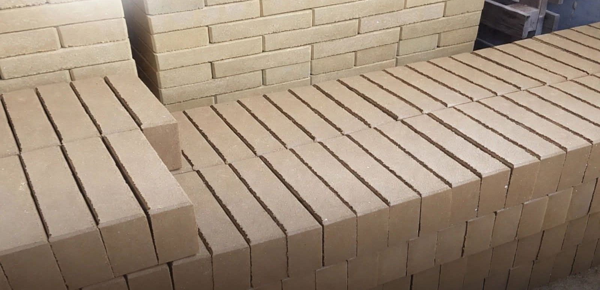
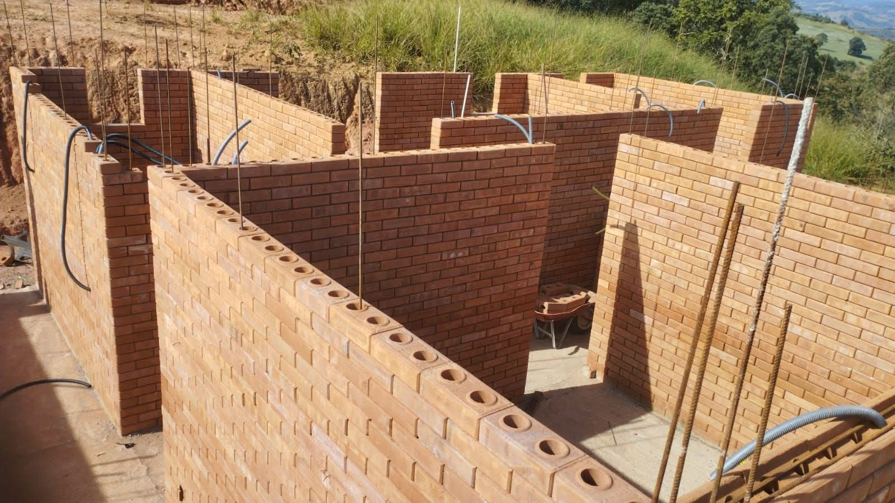

Até 40% de economia
Economia média no valor total da obra, considerando materiais e mão de obra, graças à redução do tempo de execução.

Tijolos ecológicos 15 × 30 cm, produzidos com máquina automática e prensa hidráulica para entregar excelente acabamento, resistência e economia na obra.
Somos fabricantes de tijolos ecológicos no estado do Rio Grande do Sul. Nossa produção utiliza máquina automática com prensa hidráulica, garantindo padronização, ótimo acabamento e alta resistência para diferentes tipos de construção.
O tijolo ecológico ajuda a reduzir etapas e materiais durante a execução da obra.
Economia média no valor total da obra, considerando materiais e mão de obra, graças à redução do tempo de execução.
O sistema construtivo reduz significativamente a utilização de cimento em diversas etapas.
Os canais do tijolo ajudam na passagem de água, elétrica e outras instalações sem precisar quebrar a parede.
Possibilidade de diminuir em cerca de 50% a 60% o uso de ferragens, conforme o projeto estrutural.
A estrutura do tijolo contribui para uma casa mais confortável e agradável.
O sistema permite que a parede “respire”, ajudando a reduzir problemas relacionados à umidade e mofo.
Produção em máquina automática com prensa hidráulica para maior uniformidade e resistência.
Uma alternativa mais sustentável para quem busca construir com eficiência e menor desperdício.
Veja na prática a diferença que faz construir com Tijolos Ecológicos.
*A economia pode variar conforme projeto, materiais, mão de obra e método construtivo.

Além do excelente acabamento, os tijolos Tijolos Ecológicos podem ser utilizados em diferentes projetos, desde construções residenciais até elementos externos e áreas de lazer.
Produzido para quem quer uma obra mais eficiente, com ótimo acabamento e visual moderno.
Preencha o formulário ao lado ou fale direto com nossa equipe pelo WhatsApp. Vamos entender seu projeto e enviar o melhor orçamento.